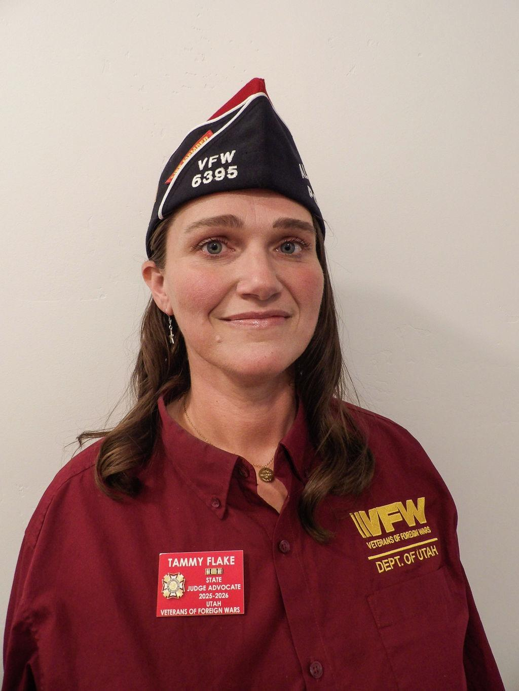
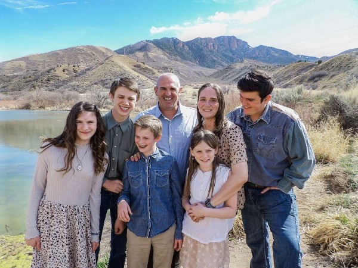
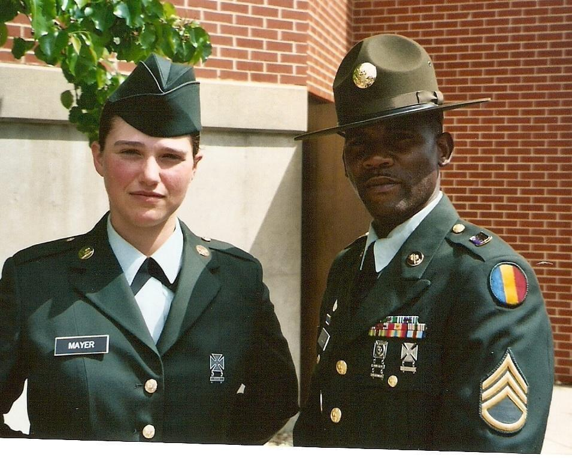
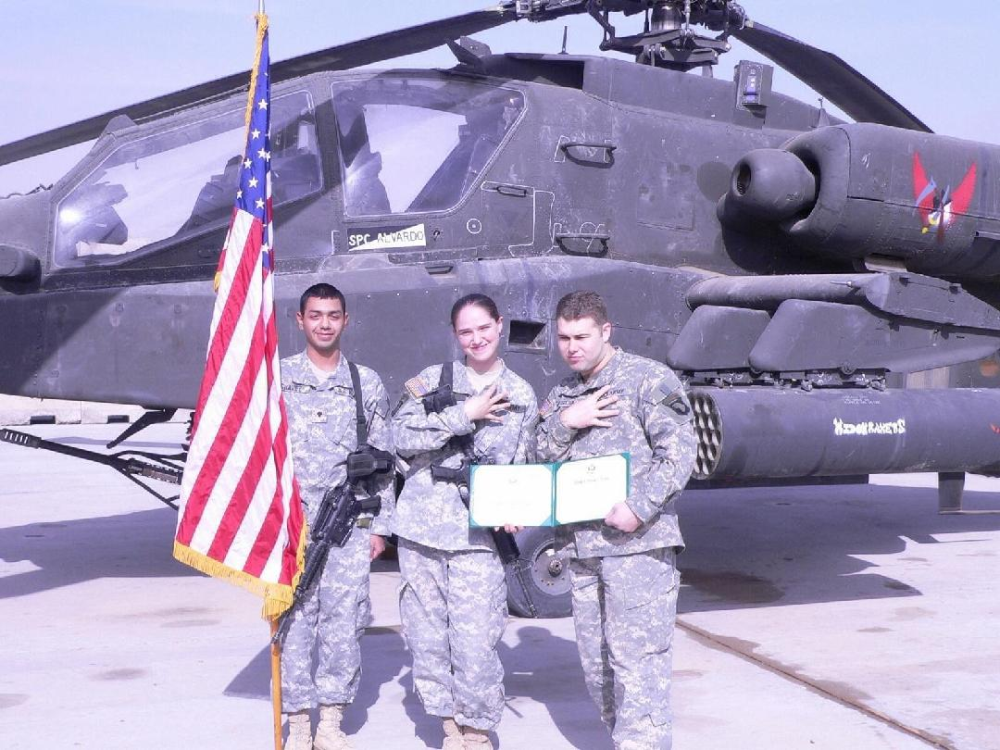
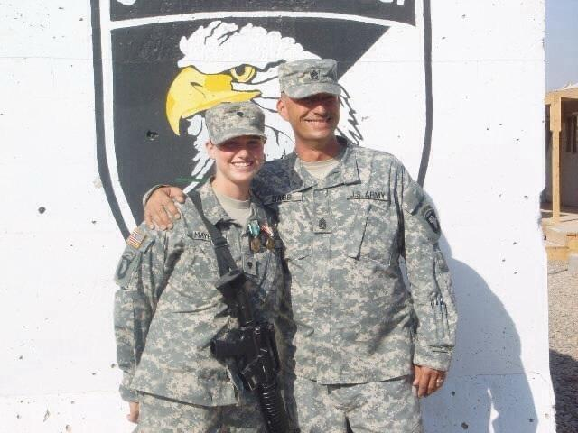
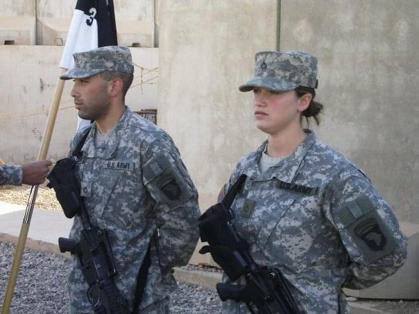
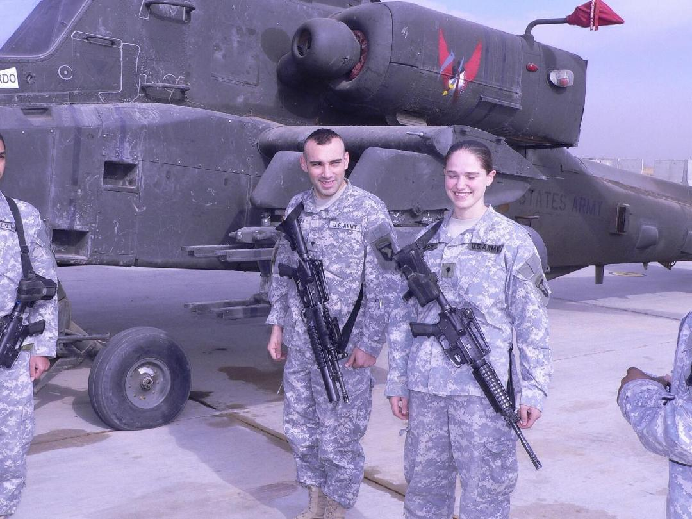
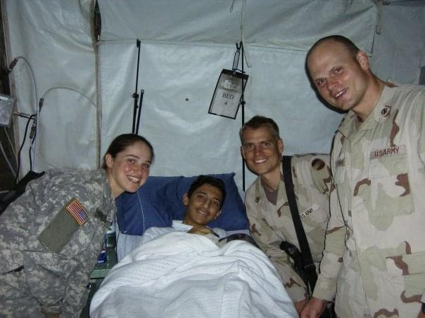
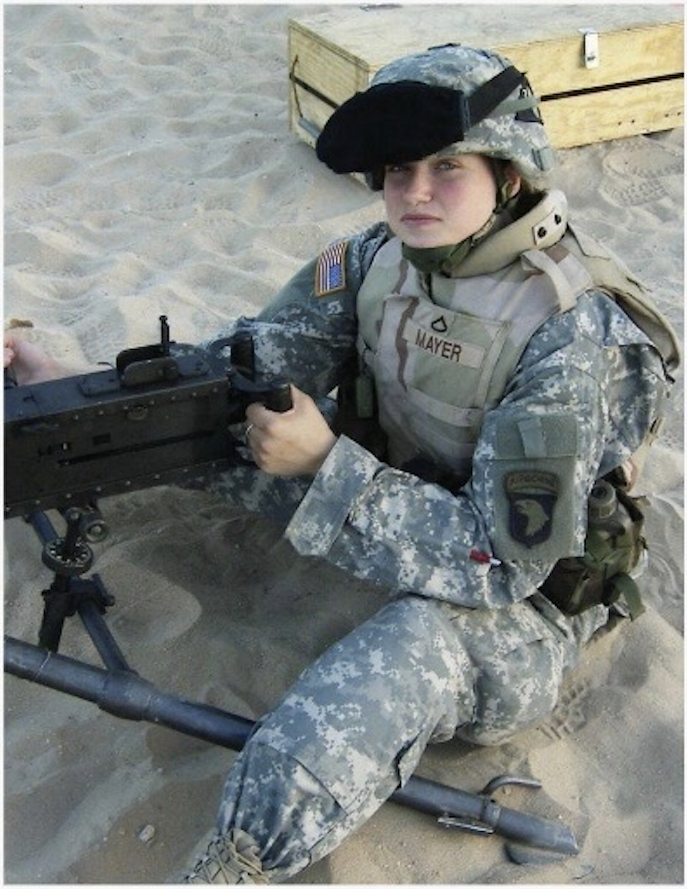

It's Time to Listen. It's Time to Connect.
U.S. Army Veteran • 3-101 Aviation • Air Assault • Iraq 2005-2006
“The opposite of addiction is not sobriety.
The opposite of addiction is connection.”
Who I Am
Tammy Flake served in the United States Army from February 2004 to December 2008 as a unit supply specialist and arms room specialist. Stationed at Ft. Campbell, Kentucky, she worked with the 3-101 Aviation Unit Apache Helicopters, became air assault qualified, and deployed to Iraq from 2005 to 2006, supporting critical operations at LSA Anaconda.
Family is at the heart of Tammy's life. She is married to her best friend, James, and together they have five children: Ridge, Coal, Steel, Valley, and Brook. They run a successful government contracting business, and Tammy contributes to her community through Americans for Prosperity in Utah.
Tammy currently serves as VFW Post Quartermaster and Utah State Judge Advocate. She is passionate about combating veteran suicide through her work with Heroes Haven and is a member of the American Legion. Let the VFW be about service, not agendas. Brotherhood and sisterhood, not titles.

VFW Post Quartermaster • Utah State Judge Advocate
Grassroots leadership. Building from the front, not directing from the top. I'll be doing it with you, not telling you to do it.
Honest leadership means having hard conversations about veteran suicide, addiction, and the barriers that keep families away from the VFW.
No more "good old boys club." Every veteran who served overseas earned their place. Every member's voice matters.
Military people know tomorrow is not promised. I have something to offer, and the time to serve is now.
Family First

Tammy • James • Ridge • Coal • Steel • Valley • Brook
Service & Sacrifice






The Vision
The VFW's mission is powerful: camaraderie, service, and advocacy. But we've lost our way when we focus on how the outside world sees us instead of how we see each other. Only veterans understand veterans. That understanding should lead.
Today's veterans need their families at meetings. We need spaces for healing, not habits. Families should feel welcome, not excluded. When we strengthen families, we strengthen veterans.
Meditation. Scuba diving. Hiking. Many veterans are seeking better ways to heal from PTSD and moral injury. We should be leading the way toward these alternatives, not holding onto old patterns.
Veterans leaving the military today juggle disability pay with extra jobs to make ends meet. If we want them in the VFW, we need to meet them where they are and offer real value for their families.
We signed a contract with our country. Congress must honor theirs. The VFW's reputation as an advocate in DC for veteran benefits must remain strong and unwavering.
Real change starts at the post level. Setting the foundation properly, building from the ground up. Not directives from on high, but solutions born from the people doing the work.
Suicide is running rampant among veterans. We need to talk about the things that are hard to talk about. Connection, not isolation. Love, not judgment. Bonding, not bureaucracy.
Why Now
People want change but won't stand up. I will. Here's why this can't wait.
The VFW needs someone who will stand up to the system when it becomes blind to its own problems. Someone connected, knowledgeable, and unafraid to push back with love and truth. People need change but won't stand up — I will.
Big impacts start at the front. I'm going to be doing it alongside you — boots on the ground, setting the foundation properly. Changing thoughts and actions from the post level up. This is how we fix recruitment and retention for good.
Military people understand urgency. I know I have something to offer, and I want to serve now. I will work harder than anyone, and I will make the people who voted for me proud. The VFW will miss out if we don't act today.
Our Approach
Research shows that what people struggling with addiction need most isn't punishment or programs — it's someone who loves them. Human beings bond. When we're healthy, we bond with people. When we're hurting, we bond with whatever gives us relief.
The VFW should be the place where veterans find that bond. Not through outdated systems, but through genuine connection, understanding, and love.
We're gonna start listening. The old way was top-down talking. The new way is bottom-up listening. When veterans rediscover purpose and connection, they rediscover themselves.

— Johann Hari
Take Action
Share your thoughts. Raise your voice. Take a chance on a new vision and on each other.
Scan to Share Your Voice
Call or Text
(931) 551-6484